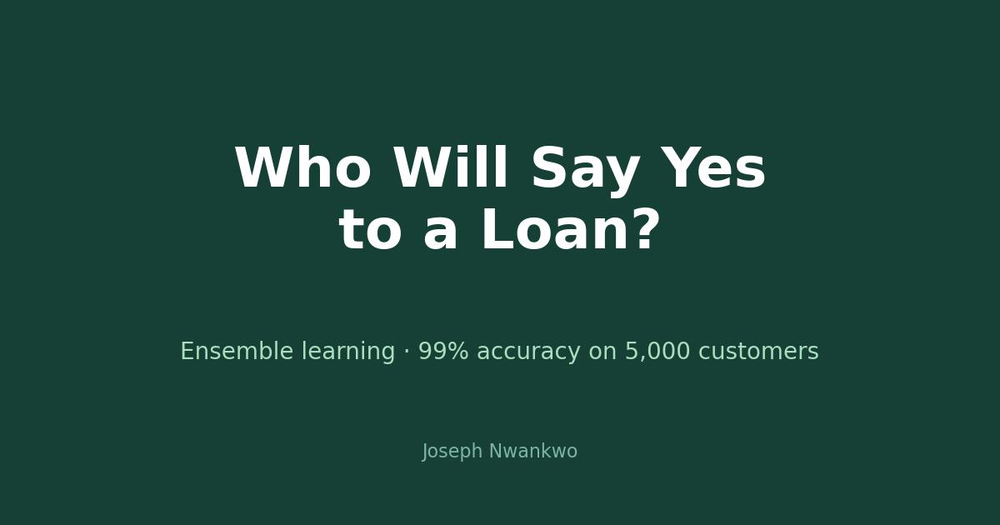

At a glance: Python, pandas, scikit-learn · bank.csv (5,000 customers × 14 fields: age, income, family, education, mortgage, accounts) · target: Personal Loan (only 9.6% positive — imbalanced) · Naive Bayes 0.88 vs. Logistic Regression 0.95 vs. Bagging 0.99 accuracy.
The business problem.
Marketing a loan to everyone wastes money and annoys customers. Target the right 10% and conversion jumps. The bank's question: which customers are most likely to accept a personal loan offer?
The data.
5,000 customer records with demographics and financial details — age, experience, income, family size, education, mortgage, securities and CD accounts, online banking, credit card usage. Clean: no missing values. The catch: only 480 customers (9.6%) accepted a loan, so the target is heavily imbalanced.
The models.
Naive Bayes set the baseline at 0.88 accuracy. Logistic Regression jumped to 0.95. Then the ensemble — bagging over decision trees — reached 0.99 accuracy, catching 135 of 144 actual loan-takers while barely misfiring on non-takers. Combining many weak learners beats any single model when the signal is spread across features.
On imbalanced data, accuracy alone can lie — so I checked the confusion matrix. The ensemble earns its 99%: high recall on the rare positive class, not just the easy majority.
What it is good for.
Targeted campaigns: score every customer, call the top decile. Product design: the important features reveal what loan-takers look like. Risk-aware marketing: fewer wasted offers, happier customers.
What is next.
Probability calibration (ranked lists need honest scores), profit-weighted evaluation, and testing on a fresh campaign cohort.